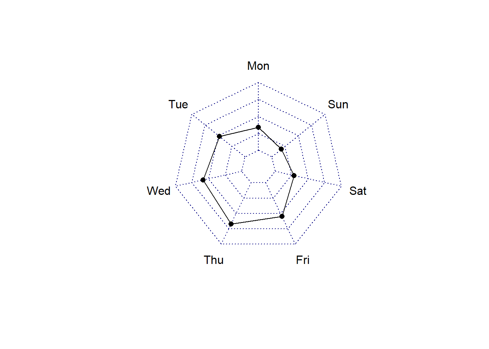
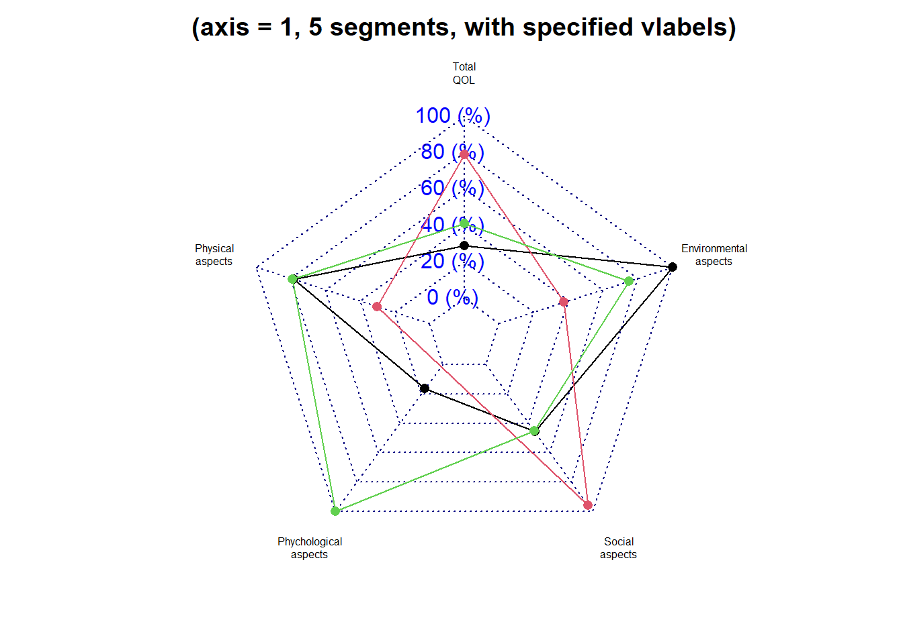
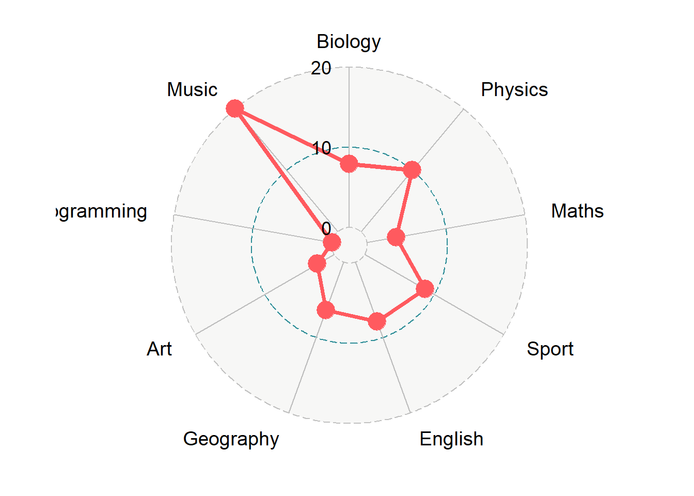
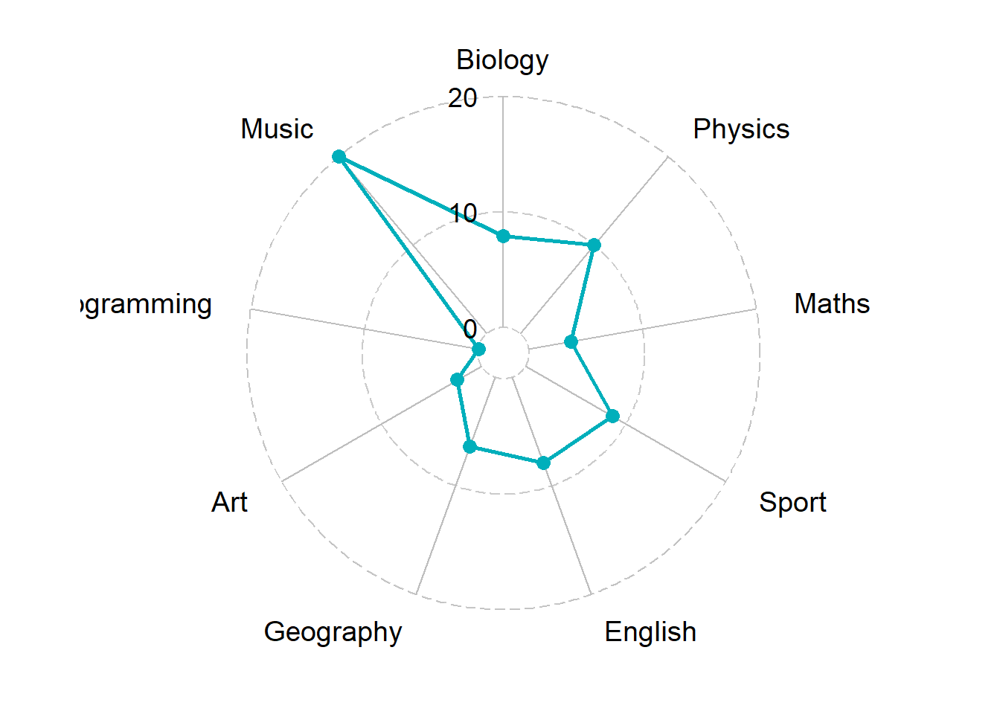
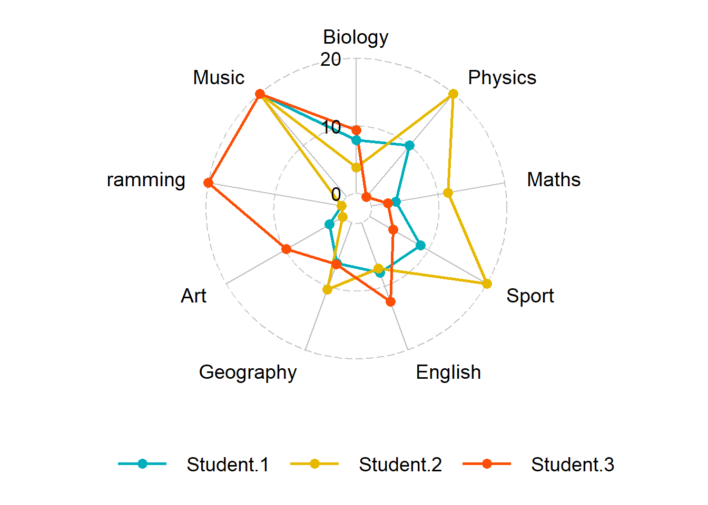
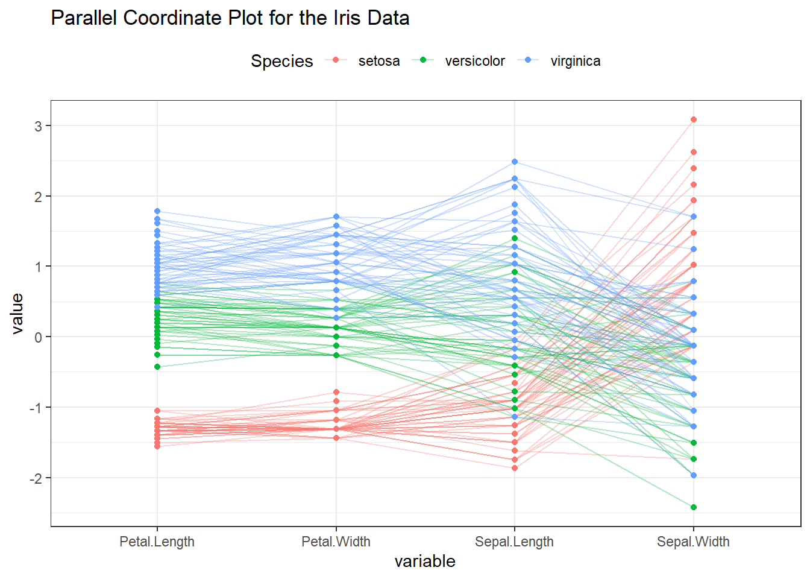
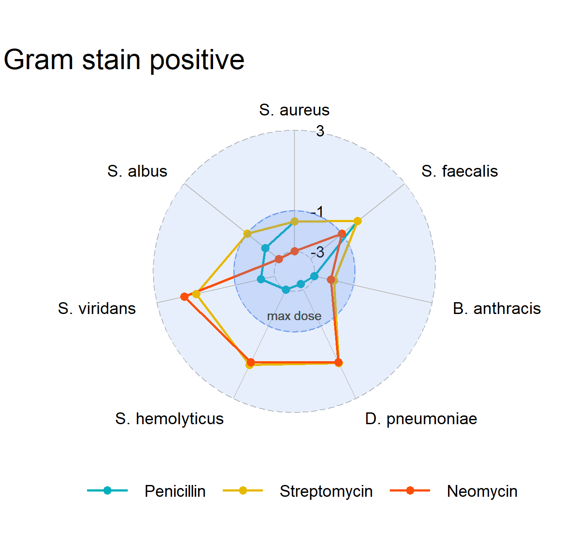
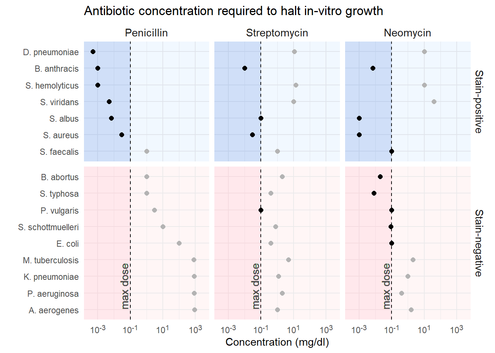

R code
# packages used
library("data.table")
library("ggplot2")
library("ggpubfigs")
library("fmsb")
library("ggradar")
library("graphclassmate")Study.
Summary
The R code for the post is listed under the “R code” pointers.
# packages used
library("data.table")
library("ggplot2")
library("ggpubfigs")
library("fmsb")
library("ggradar")
library("graphclassmate")# create data
df <- data.frame(Mon = c(100, 0, 34),
Tue = c(100, 0, 48),
Wed = c(100, 0, 58),
Thu = c(100, 0, 67),
Fri = c(100, 0, 55),
Sat = c(100, 0, 29),
Sun = c(100, 0, 18))
# view data
df Mon Tue Wed Thu Fri Sat Sun
1 100 100 100 100 100 100 100
2 0 0 0 0 0 0 0
3 34 48 58 67 55 29 18radarchart(df)
# Data must be given as the data frame, where the first cases show maximum.
maxmin <- data.frame(
total=c(5, 1),
phys=c(15, 3),
psycho=c(3, 0),
social=c(5, 1),
env=c(5, 1))
# data for radarchart function version 1 series, minimum value must be omitted from above.
RNGkind("Mersenne-Twister")
set.seed(123)
dat <- data.frame(
total = runif(3, 1, 5),
phys = rnorm(3, 10, 2),
psycho = c(0.5, NA, 3),
social = runif(3, 1, 5),
env = c(5, 2.5, 4)
)
dat <- rbind(maxmin, dat)
op <- par(mar = c(1, 2, 2, 1), mfrow = c(1, 1))
radarchart(dat,
axistyp = 1,
seg = 5,
plty = 1,
vlabels = c("Total\nQOL",
"Physical\naspects",
"Phychological\naspects",
"Social\naspects",
"Environmental\naspects"),
title = "(axis = 1, 5 segments, with specified vlabels)",
vlcex = 0.5)
# radarchart(dat,
# axistype = 2,
# pcol = topo.colors(3),
# plty = 1,
# pdensity = c(5, 10, 30),
# pangle = c(10, 45, 120),
# pfcol = topo.colors(3),
# title = "(topo.colors, fill, axis = 2)")
#
# radarchart(dat,
# axistype = 3,
# pty = 32,
# plty = 1,
# axislabcol = "grey",
# na.itp = FALSE,
# title = "(no points, axis = 3, na.itp = FALSE)")
#
# radarchart(dat,
# axistype = 1,
# plwd = 1:5,
# pcol = 1,
# centerzero = TRUE,
# seg = 4,
# caxislabels = c("worst", "", "", "", "best"),
# title = "(use lty and lwd but b/w, axis=1,\n centerzero=TRUE, with centerlabels)")
par(op)# Demo data
exam_scores <- data.frame(
row.names = c("Student.1", "Student.2", "Student.3"),
Biology = c(7.9, 3.9, 9.4),
Physics = c(10, 20, 0),
Maths = c(3.7, 11.5, 2.5),
Sport = c(8.7, 20, 4),
English = c(7.9, 7.2, 12.4),
Geography = c(6.4, 10.5, 6.5),
Art = c(2.4, 0.2, 9.8),
Programming = c(0, 0, 20),
Music = c(20, 20, 20)
)
exam_scores Biology Physics Maths Sport English Geography Art Programming Music
Student.1 7.9 10 3.7 8.7 7.9 6.4 2.4 0 20
Student.2 3.9 20 11.5 20.0 7.2 10.5 0.2 0 20
Student.3 9.4 0 2.5 4.0 12.4 6.5 9.8 20 20library(tidyverse)
# Put row names into a column named group
df <- exam_scores %>% rownames_to_column("group")
df group Biology Physics Maths Sport English Geography Art Programming Music
1 Student.1 7.9 10 3.7 8.7 7.9 6.4 2.4 0 20
2 Student.2 3.9 20 11.5 20.0 7.2 10.5 0.2 0 20
3 Student.3 9.4 0 2.5 4.0 12.4 6.5 9.8 20 20# Plotting student 1
ggradar(
df[1, ],
values.radar = c("0", "10", "20"),
grid.min = 0, grid.mid = 10, grid.max = 20
)
ggradar(
df[1, ],
values.radar = c("0", "10", "20"),
grid.min = 0, grid.mid = 10, grid.max = 20,
# Polygons
group.line.width = 1,
group.point.size = 3,
group.colours = "#00AFBB",
# Background and grid lines
background.circle.colour = "white",
gridline.mid.colour = "grey"
)
ggradar(
df,
values.radar = c("0", "10", "20"),
grid.min = 0, grid.mid = 10, grid.max = 20,
# Polygons
group.line.width = 1,
group.point.size = 3,
group.colours = c("#00AFBB", "#E7B800", "#FC4E07"),
# Background and grid lines
background.circle.colour = "white",
gridline.mid.colour = "grey",
legend.position = "bottom"
)
library(GGally)
ggparcoord(
iris,
columns = 1:4, groupColumn = 5, order = "anyClass",
showPoints = TRUE,
title = "Parallel Coordinate Plot for the Iris Data",
alphaLines = 0.3
) +
theme_bw() +
theme(legend.position = "top")
dt <- wrapr::build_frame(
"Bacteria", "Penicillin", "Streptomycin", "Neomycin", "Gram_staining" |
"Aerobacter aerogenes" , 870 , 1 , 1.6 , "Stain-negative" |
"Bacillus anthracis" , 0.001 , 0.01, 0.007, "Stain-positive" |
"Brucella abortus" , 1 , 2 , 0.02 , "Stain-negative" |
"Diplococcus pneumoniae" , 0.0005, 11 , 10 , "Stain-positive" |
"Escherichia coli" , 100 , 0.4 , 0.1 , "Stain-negative" |
"Klebsiella pneumoniae" , 850 , 1.2 , 1 , "Stain-negative" |
"Mycobacterium tuberculosis" , 800 , 5 , 2 , "Stain-negative" |
"Proteus vulgaris" , 3 , 0.1 , 0.1 , "Stain-negative" |
"Pseudomonas aeruginosa" , 850 , 2 , 0.4 , "Stain-negative" |
"Salmonella typhosa", 1 , 0.4 , 0.008, "Stain-negative" |
"Salmonella schottmuelleri" , 10 , 0.8 , 0.09 , "Stain-negative" |
"Staphylococcus albus" , 0.007 , 0.1 , 0.001, "Stain-positive" |
"Staphylococcus aureus" , 0.03 , 0.03, 0.001, "Stain-positive" |
"Streptococcus faecalis" , 1 , 1 , 0.1 , "Stain-positive" |
"Streptococcus hemolyticus" , 0.001 , 14 , 10 , "Stain-positive" |
"Streptococcus viridans" , 0.005 , 10 , 40 , "Stain-positive"
)
dt <- wrapr::build_frame(
"Bacteria", "Penicillin", "Streptomycin", "Neomycin", "Gram_staining" |
"A. aerogenes" , 870 , 1 , 1.6 , "Stain-negative" |
"B. anthracis" , 0.001 , 0.01 , 0.007, "Stain-positive" |
"B. abortus" , 1 , 2 , 0.02 , "Stain-negative" |
"D. pneumoniae" , 0.0005, 11 , 10 , "Stain-positive" |
"E. coli" , 100 , 0.4 , 0.1 , "Stain-negative" |
"K. pneumoniae" , 850 , 1.2 , 1 , "Stain-negative" |
"M. tuberculosis" , 800 , 5 , 2 , "Stain-negative" |
"P. vulgaris" , 3 , 0.1 , 0.1 , "Stain-negative" |
"P. aeruginosa" , 850 , 2 , 0.4 , "Stain-negative" |
"S. typhosa" , 1 , 0.4 , 0.008, "Stain-negative" |
"S. schottmuelleri" , 10 , 0.8 , 0.09 , "Stain-negative" |
"S. albus" , 0.007 , 0.1 , 0.001, "Stain-positive" |
"S. aureus" , 0.03 , 0.03 , 0.001, "Stain-positive" |
"S. faecalis" , 1 , 1 , 0.1 , "Stain-positive" |
"S. hemolyticus" , 0.001 , 14 , 10 , "Stain-positive" |
"S. viridans" , 0.005 , 10 , 40 , "Stain-positive"
)
dt <- data.table(dt)`
dt <- melt(dt,
id.vars = c("Bacteria", "Gram_staining"),
variable.name = "Antibiotic",
variable.factor = FALSE,
value.name = "Concentration")
dt[, Antibiotic := factor(Antibiotic,
levels = c("Penicillin", "Streptomycin", "Neomycin"))]
# order by increasing doses of penicillin
this_order <- dt[Antibiotic == "Penicillin"]
setorderv(this_order, c("Concentration"))
this_order[, row_order := -1*seq.int(nrow(this_order))]
this_order <- this_order[, .(Bacteria, row_order)]
dt <- merge(dt, this_order, by = "Bacteria", all.x = TRUE)
dt[, panel_fill := "pink"]
dt <- dt[Gram_staining == "Stain-positive", panel_fill := "cornflowerblue"]
dt[] Bacteria Gram_staining Antibiotic Concentration row_order
<char> <char> <fctr> <num> <num>
1: A. aerogenes Stain-negative Penicillin 8.7e+02 -16
2: A. aerogenes Stain-negative Streptomycin 1.0e+00 -16
3: A. aerogenes Stain-negative Neomycin 1.6e+00 -16
4: B. abortus Stain-negative Penicillin 1.0e+00 -7
5: B. abortus Stain-negative Streptomycin 2.0e+00 -7
6: B. abortus Stain-negative Neomycin 2.0e-02 -7
7: B. anthracis Stain-positive Penicillin 1.0e-03 -2
8: B. anthracis Stain-positive Streptomycin 1.0e-02 -2
9: B. anthracis Stain-positive Neomycin 7.0e-03 -2
10: D. pneumoniae Stain-positive Penicillin 5.0e-04 -1
11: D. pneumoniae Stain-positive Streptomycin 1.1e+01 -1
12: D. pneumoniae Stain-positive Neomycin 1.0e+01 -1
13: E. coli Stain-negative Penicillin 1.0e+02 -12
14: E. coli Stain-negative Streptomycin 4.0e-01 -12
15: E. coli Stain-negative Neomycin 1.0e-01 -12
16: K. pneumoniae Stain-negative Penicillin 8.5e+02 -14
17: K. pneumoniae Stain-negative Streptomycin 1.2e+00 -14
18: K. pneumoniae Stain-negative Neomycin 1.0e+00 -14
19: M. tuberculosis Stain-negative Penicillin 8.0e+02 -13
20: M. tuberculosis Stain-negative Streptomycin 5.0e+00 -13
21: M. tuberculosis Stain-negative Neomycin 2.0e+00 -13
22: P. aeruginosa Stain-negative Penicillin 8.5e+02 -15
23: P. aeruginosa Stain-negative Streptomycin 2.0e+00 -15
24: P. aeruginosa Stain-negative Neomycin 4.0e-01 -15
25: P. vulgaris Stain-negative Penicillin 3.0e+00 -10
26: P. vulgaris Stain-negative Streptomycin 1.0e-01 -10
27: P. vulgaris Stain-negative Neomycin 1.0e-01 -10
28: S. albus Stain-positive Penicillin 7.0e-03 -5
29: S. albus Stain-positive Streptomycin 1.0e-01 -5
30: S. albus Stain-positive Neomycin 1.0e-03 -5
31: S. aureus Stain-positive Penicillin 3.0e-02 -6
32: S. aureus Stain-positive Streptomycin 3.0e-02 -6
33: S. aureus Stain-positive Neomycin 1.0e-03 -6
34: S. faecalis Stain-positive Penicillin 1.0e+00 -9
35: S. faecalis Stain-positive Streptomycin 1.0e+00 -9
36: S. faecalis Stain-positive Neomycin 1.0e-01 -9
37: S. hemolyticus Stain-positive Penicillin 1.0e-03 -3
38: S. hemolyticus Stain-positive Streptomycin 1.4e+01 -3
39: S. hemolyticus Stain-positive Neomycin 1.0e+01 -3
40: S. schottmuelleri Stain-negative Penicillin 1.0e+01 -11
41: S. schottmuelleri Stain-negative Streptomycin 8.0e-01 -11
42: S. schottmuelleri Stain-negative Neomycin 9.0e-02 -11
43: S. typhosa Stain-negative Penicillin 1.0e+00 -8
44: S. typhosa Stain-negative Streptomycin 4.0e-01 -8
45: S. typhosa Stain-negative Neomycin 8.0e-03 -8
46: S. viridans Stain-positive Penicillin 5.0e-03 -4
47: S. viridans Stain-positive Streptomycin 1.0e+01 -4
48: S. viridans Stain-positive Neomycin 4.0e+01 -4
Bacteria Gram_staining Antibiotic Concentration row_order
panel_fill
<char>
1: pink
2: pink
3: pink
4: pink
5: pink
6: pink
7: cornflowerblue
8: cornflowerblue
9: cornflowerblue
10: cornflowerblue
11: cornflowerblue
12: cornflowerblue
13: pink
14: pink
15: pink
16: pink
17: pink
18: pink
19: pink
20: pink
21: pink
22: pink
23: pink
24: pink
25: pink
26: pink
27: pink
28: cornflowerblue
29: cornflowerblue
30: cornflowerblue
31: cornflowerblue
32: cornflowerblue
33: cornflowerblue
34: cornflowerblue
35: cornflowerblue
36: cornflowerblue
37: cornflowerblue
38: cornflowerblue
39: cornflowerblue
40: pink
41: pink
42: pink
43: pink
44: pink
45: pink
46: cornflowerblue
47: cornflowerblue
48: cornflowerblue
panel_filldt[, log10_conc := log10(Concentration)]# x <- dt[Gram_staining == "Stain-negative", .(Bacteria, Antibiotic, Concentration)]
# radarchart(x)library(ggtext)
x <- dt[Gram_staining == "Stain-positive", .(Bacteria, Antibiotic, log10_conc)]
x <- dcast(x, Antibiotic ~ Bacteria)
setcolorder(x, c(1, 5, 6, 2, 3, 7, 8, 4))
ggradar(
x,
values.radar = c(-3, -1, 3),
grid.min = -3,
grid.mid = -1,
grid.max = 3,
centre.y = -4,
plot.extent.x.sf = 1.25,
plot.extent.y.sf = 1.25,
group.line.width = 1,
group.point.size = 3,
gridline.label.offset = 1.5,
group.colours = c("#00AFBB", "#E7B800", "#FC4E07"),
background.circle.colour = "cornflowerblue",
background.circle.transparency = 0.15,
gridline.mid.colour = "cornflowerblue",
legend.position = "bottom",
base.size = 4,
plot.title = "Gram stain positive"
) +
geom_point(aes(x = 0, y = 0),
alpha = 0.04,
size = 49,
color = "cornflowerblue") +
geom_text(mapping = aes(x = 0, y = -2.4, label = c("max dose")),
vjust = 0,
hjust = 0.5,
color = "gray30")
x <- dt[Gram_staining == "Stain-negative", .(Bacteria, Antibiotic, log10_conc)]
x <- dcast(x, Antibiotic ~ Bacteria)
setcolorder(x, c(1, 3, 8, 9, 4, 6, 5, 7, 2, 10))
ggradar(
x,
values.radar = c(-3, -1, 3),
grid.min = -3,
grid.mid = -1,
grid.max = 3,
centre.y = -4,
plot.extent.x.sf = 1.25,
plot.extent.y.sf = 1.25,
group.line.width = 1,
group.point.size = 3,
gridline.label.offset = 0,
group.colours = c("#00AFBB", "#E7B800", "#FC4E07"),
background.circle.colour = "pink",
background.circle.transparency = 0.15,
gridline.mid.colour = "pink",
legend.position = "bottom",
base.size = 4,
plot.title = "Gram stain negative"
) +
geom_point(aes(x = 0, y = 0),
alpha = 0.04,
size = 49,
color = "pink") +
geom_text(mapping = aes(x = 0, y = -2.4, label = c("max dose")),
vjust = 0,
hjust = 0.5,
color = "gray30")
#| fig-asp: 0.6
ggplot(dt, aes(x = log10_conc,
y = reorder(Bacteria, row_order))) +
facet_grid(rows = vars(Gram_staining),
cols = vars(Antibiotic),
as.table = FALSE,
scales = "free_y",
space = "free_y") +
labs(x = "Concentration (mg/dl)",
y = "",
title = "Antibiotic concentration required to halt in-vitro growth") +
scale_x_continuous(limits = c(-3.5, 3.5),
breaks = seq(-3, 3, 2),
labels = function(x){paste0("10^", x)}) +
geom_rect(aes(xmin = -Inf,
xmax = -1,
ymin = -Inf,
ymax = Inf),
color = "transparent",
fill = dt$panel_fill,
alpha = 0.05) +
geom_rect(aes(xmin = -1,
xmax = Inf,
ymin = -Inf,
ymax = Inf),
color = "transparent",
fill = dt$panel_fill,
alpha = 0.01) +
geom_vline(xintercept = -1, linetype = 2) +
geom_point(size = 2) +
geom_point(data = dt[log10_conc > -1], size = 2, color = "gray70") +
geom_text(data = dt[Gram_staining == "Stain-negative"],
mapping = aes(x = -1, y = 1, label = c("max dose")),
vjust = -0.3,
hjust = 0,
angle = 90,
color = "gray30") +
theme_minimal() +
theme(legend.position = "none",
axis.text.x = element_markdown(),
strip.text = element_text(size = 11))
fmsb for radar charts